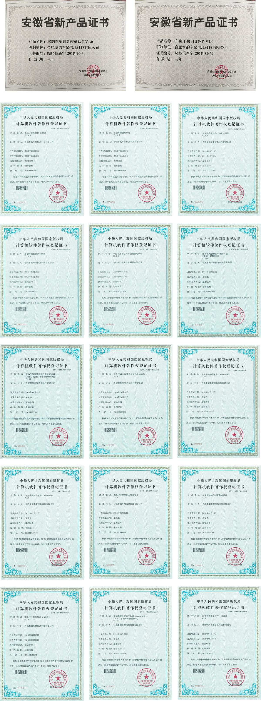

2014年03月，合肥掌韵车聚信息科技有限公司在安徽合肥正式成立；
2014年06月，公司取得“车兔子养车软件（Android版）（IOS版）”“掌韵车聚管理软件”软件著作权证书；
2014年08月，“车兔子养车宝”项目安卓版本完成并上线，成为公司首个汽车后市场服务产品；
2014年09月，公司取得“掌韵车聚智慧停车收费管理软件” 、“掌韵车聚智慧停车软件”软件著作权证书；
2014年11月，掌韵车聚“智慧泊车收费管理系统”研发成功，并开始投入合肥市场；
2014年12月，掌韵车聚顺利完成“智慧泊车诱导发布平台”第一阶段的研发工作；
2015年01月，掌韵车聚完成“车兔子快停车”产品研发完成；
2015年02月，掌韵车聚“车兔子快停车”正式上线。
2015年05月，掌韵车聚取得“车兔子快停车（iOS版）、（Android版）”两个软件著作权证书；
2015年06月，掌韵车聚取得“车兔子快停车运营管理系统、车兔子快停车物业管理系统”两个软件著作权证书；
2015年07月，掌韵车聚取得“车兔子城市智慧停车诱导发布系统”软件著作权证书；
2015年09月，阜阳市颍上县成功上线掌韵车聚智慧停车收费管理系统；
2015年10月，“合肥停车”APP成功上线，支持支付宝、微信、银联卡、翼支付、合肥通、合肥停车卡缴费；
2015年11月，淮北市成功上线掌韵车聚智慧停车收费系统和淮北城泊APP手机客户端。
2015年12月，“车兔子快引导软件V1.0”“掌韵车聚智慧停车软件V1.0”双双获得安徽省新产品证书；
2015年12月，掌韵车聚智慧停车收费系统和快停车APP双双获得合肥市高新区新产品质量奖；
2016年03月，合肥市肥东县成功上线掌韵车聚智慧停车收费系统和停车APP手机客户端；
2016年04月，合肥市庐江县成功上线掌韵车聚智慧停车收费系统和停车APP手机客户端；
